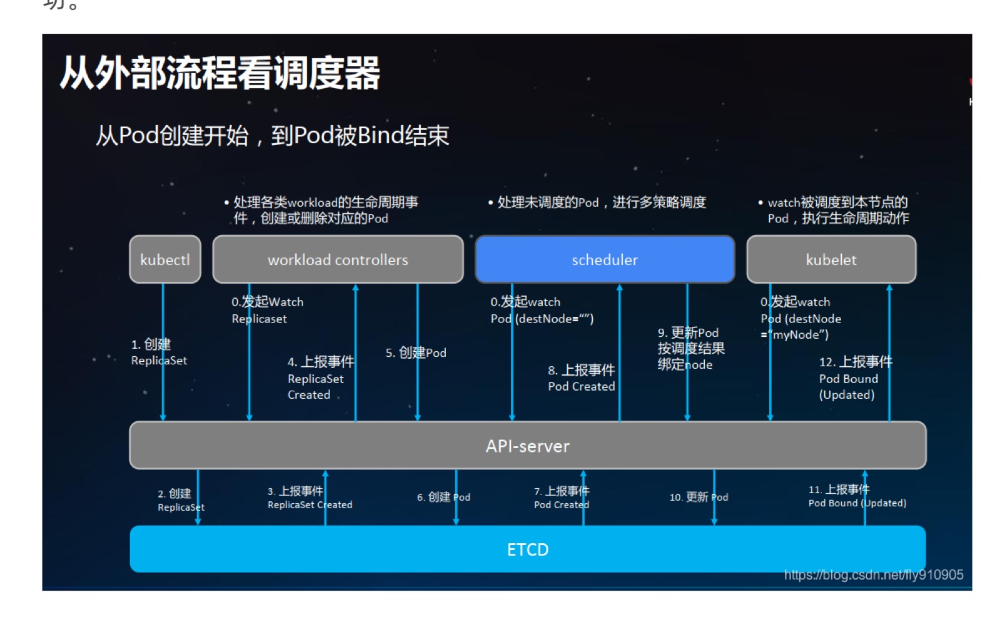

kubernetes 调度过程
k8s 调度过程

执行滚动升级
修改 deployment.yml 文件，追加 rollingUpdate
# 部署应用
apiVersion: apps/v1
kind: Deployment
metadata:
name: jobcher-blog-deployment
labels:
app: jobcher-blog
spec:
replicas: 3
selector:
matchLabels:
app: jobcher-blog
minReadySeconds: 10 #准备10s
strategy:
type: RollingUpdate
rollingUpdate:
maxUnavailable: 1 #更新期间不少于3-1
maxSurge: 1 #更新期间不超过3+1
template:
metadata:
labels:
app: jobcher-blog
spec:
containers:
- name: jobcher-blog-pod
image: hub.docker.com/blog/hugo:latest
执行命令
kubectl rollout restart deployment jobcher-blog-deployment